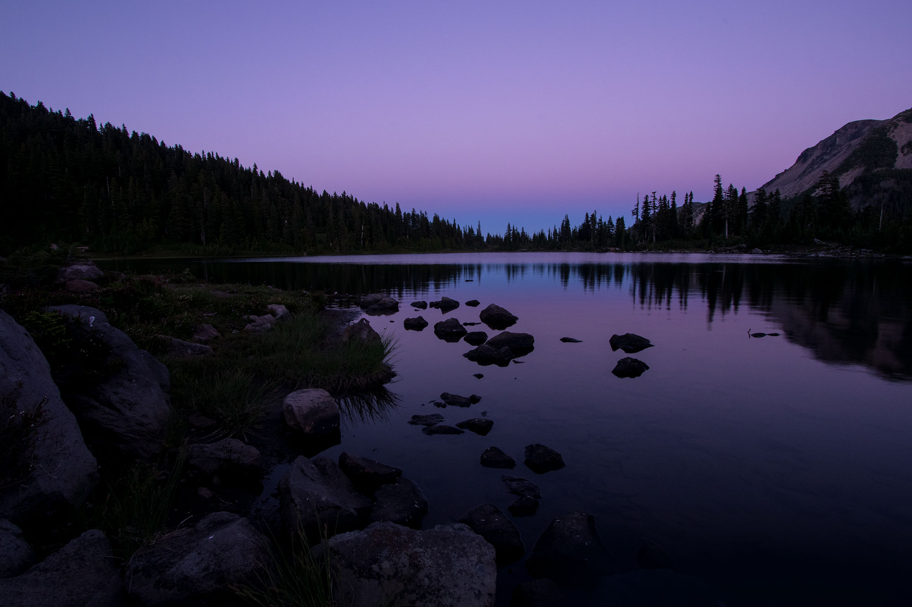

JEFFERSON PARK WILDERNESS
Thoughts on rough roads, carefree trails and backcountry science in Oregon's Jefferson Park.
On a backpacking trip to the Olympic Peninsula's rugged Pacific coast, I explore four possible future scenarios.
EXPLOREImagine that you're careening through the city
on an old bus, and you find a notebook wedged
in the corner of the seat. Open it up. Dusty
sketches of swampy backwaters, photographs of
foreign lands, illustrations of exotic foods.
No destination reviews, no top 10 lists and no
industry guest posts. It appears to be written
merely for the joy of curious explorers and travelers.
This was the reason I set out to create Notes
from the Road in 1999. If you enjoy reading
about travel, dive in: Notes from the Road rewards
readers who enjoy digging deep and exploring even
while surfing the web. Check out my Roam section,
where I write about everything from organizing for
travel, to the importance of science to travel
bloggers, to traveling through the deserts
of Mexico and the fight to save the marine
wilderness of Guana Cay.
Thoughts on rough roads, carefree trails and backcountry science in Oregon's Jefferson Park.
Into the mangroves, coastal scrub and pink lagoons of Mexico's Yucatan Coast.
Through Colonial towns, mangrove forests and Caribbean jungle, I seek the Pedorrera.
In pursuit of the multicolored Pedorrera, I begin my quest in the historic center of Havana, Cuba.
Finding dragonflies and obsidian in Oregon's ancient Lake Chewaucan Lakebed
In Spain's northeastern Mediterranean coast, I make the case for itinerary-free travel.
You can learn more about me and the history of Notes from the Road in the about section. You can also catch up with my radio interview, where I talk about experimental travel writing, the future of travel blogging and my lessons on learning to travel. I also keep a list of great imrprovised road trip music from the Grateful Dead and Phish.
"Be Inspired!" – Lonely Planet
"Unexpected frontier of the travel blogosphere" – Boston Globe
"Sumptuous Site" – Time Magazine
"The Best Looking Blog We've Seen" – Forbes Magazine
"Best of the Travel Blogs" – National Geographic Traveller
"Stands out for Hard Journalism" – Lowell Thomas Awards in 2012
I illustrate my travel blog with sketches in marker, watercolor, pen and pencil. Travel sketches and travel journals have a way of capturing a place in a way that travel photographs cannot. And they can illustrate a particular thing about a place from the subjective mood and perspective of the traveler. If you're interested in creating your own travel sketchbook, here is a post on creating lightweight travel sketchbook supplies. You can also check out my travel maps, like my West Indies Map, my Portugal map, my Nicaragua map, or my Salton Sea map.
Sketches and illustrations, as well as notes on the U.S. conversation about Cuba, and its effect on Cuba and the Caribbean.
Drawings, sketches and illustrations from Barcelona, Catalonia, Spain.
Drawings and Moleskine sketches from my travels on the island of Sicily.
I witnessed the strangest thing in the damp forest east of Odell, Oregon. Check out my notes on fairy moths.
Did you know that I created Notes from the Road before the phrase 'travel blog' even existed? In 1999, when I started writing this blog while traveling on a shoestring budget, they called travel blogs, 'online travelogues.'
Explore Sicily's Tyrhennian coast, with notes on climate and immigration on the island.
Notes on traveling to the Coyote Buttes during surreal winter weather.
Notes on ecological devastation and salvation along the New River in Southern California.
A beacon of light on the darker roads of travel.
© 2019 Erik Gauger. All text, photographs, illustrations, sketches and design created by the
author. CSS responsive web design by Hans Gauger.